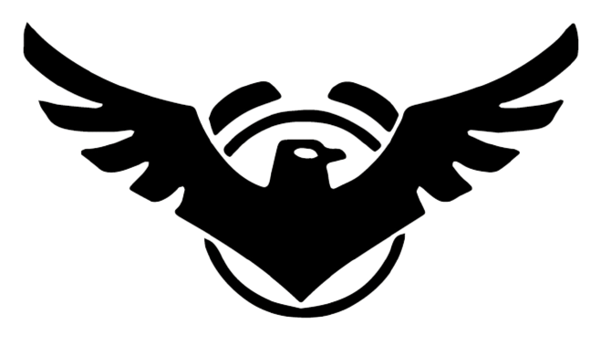
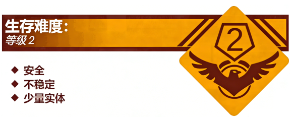

Level 1 - "操场"
致流浪者的一封信：

很好，流浪者，既然你来到了这里，就说明你已经正式通过了第一个考验。Level 0 只是起点，从现在开始，你将要正式开始面对各种各样的实体和可能发生的危险事件。请你在准备进入一个层级前，先确认这个地点的安全性以及了解基本信息，你可以通过查看数据库中的文档来对这个层级进行大概了解。
当然，如果你发现了一个新的层级，也可以随时汇报给 S.M.E.G，你的发现对其他流浪者来说至关重要。大胆去做吧，相信自己。愿你在这里能安全地生活下去。
—— S.M.E.G

描述：

Level 1 是 The School Rooms 的第二层，其外观为一处标准的校园露天操场，包含塑胶环形跑道、中间的绿色草皮、四周的篮球架、单杠、双杠等体育器材，跑道表面有一些磨损痕迹。跑道的旁边有一栋类似于教学楼的建筑。
操场北侧设有主席台与领操台，台面上装有褪色的广播喇叭，广播设备会在固定时间播放跑操音乐或下课铃声。操场西侧为铁丝网围栏，围栏外是通往校园外部的辅路，东侧则是一排树木，树下设有长椅与饮水台，饮水台仅在白天有常温饮用水流出，傍晚后会自动停水。该层级整体空间规模固定，但在广播喇叭播放跑操音乐时，跑道会出现 “循环感”，沿跑道直行易回到起点，不建议流浪者在此时段接近跑道，这可能会造成危险的后果。
本层级是一个为数不多的安全层级，在“下课时间”流浪者可以几乎没有阻碍地在 Level 1 活动，但也不排除被“老师”进行突然袭击，因做了违纪的事情被“执勤队员”进行“扣分”等。建议流浪者在“下课时间”来到此层级时寻找附近的组织寻求帮助，或者结伴在此层级休整，尽可能避免与危险实体的接触。
实体：
本层级核心实体为巡场的体育老师，外形为身着运动服、手持秒表的成年男性，会沿跑道与器材区巡逻。其核心行为是制止流浪者触碰松动的体育器材、在草坪上踩踏或在饮水台处浪费水。若流浪者拒不配合，会被其驱赶至操场边缘，驱赶过程中无肢体冲突，但会持续跟随直至流浪者离开其巡逻范围。
基地、前哨和社区：
S.M.E.G 课间休息站：位于饮水机旁，流浪者可以在“下课时间”来到此前哨站休整。
奔跑吧·少年：一个神秘的组织，喜欢在此层级疯跑，但是由于特殊原因，此组织在不久前就解散了。
R.S.S 的物品分享会：位于主席台旁边的空地上，他们会试图用从 Level 0.1 买来的小物品和你进行游戏或交易。
跑抓社：疑似为“奔跑吧·少年”解散后部分成员再次组建的组织。在部分“课间时间”会组织名为“跑跑抓”的游戏，容易被“老师”或者“执勤队员”制裁。
入口和出口：
入口：在 Level 0 走入校门可以进入此层级，你也可以通过在楼梯间跟随标志一直往下走来到这里。如果条件允许的话，你也可以乘坐电梯来到这里。你还可以通过教学楼底部的一条小道在 Level 1 和 Level 5 之间往返。
出口：在“放学时间”走向远处的校门，会来到 Level 0；走入楼梯间或乘坐电梯到别的楼层会带你到 Level 2；走入保安室会带你来到 Level 0.9，也可以原路返回；在饮水机附近的草丛里找到一条隐蔽的小路并走进去，会通往 Level 0.1。